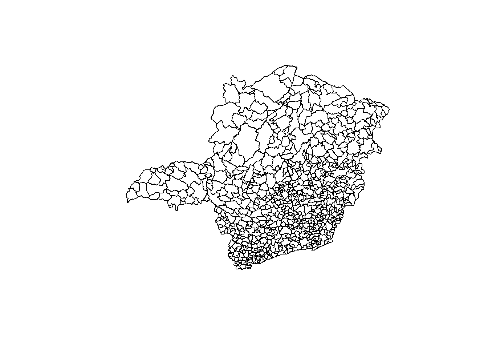

After perform data preparation, we can load the processed data using the following code.
# performing data (processed) loading
dataRawDirectory <- "./data/processed/"
shapefile_to_read <- paste(dataRawDirectory, "crime_mg_processed.shp", sep = "")
target <- readOGR(shapefile_to_read, encoding="UTF-8")## OGR data source with driver: ESRI Shapefile
## Source: "D:\OneDrive\FGV\04_Modulos\06 - Estatistica Espacial\Spatial-Statistics\data\processed\crime_mg_processed.shp", layer: "crime_mg_processed"
## with 754 features
## It has 17 fieldsThen, we can get an initial exploration on the data and the shapefile.
## CODMUNI ID MUNIC
## Min. : 10 Min. : 0.0 Abadia dos Dourados: 1
## 1st Qu.:1852 1st Qu.:188.2 Abaeté : 1
## Median :3645 Median :377.5 Abre-Campo : 1
## Mean :3636 Mean :377.5 Acaiaca : 1
## 3rd Qu.:5444 3rd Qu.:566.8 Açucena : 1
## Max. :7220 Max. :755.0 Água Boa : 1
## (Other) :748
## AREA INDICE94 INDICE95 GINI_91
## Min. : 40.3 Min. : 0.260 Min. : 0.420 Min. :0.0000
## 1st Qu.: 208.9 1st Qu.: 8.143 1st Qu.: 9.643 1st Qu.:0.5129
## Median : 371.4 Median :12.060 Median :13.975 Median :0.5578
## Mean : 779.4 Mean :13.329 Mean :15.449 Mean :0.5330
## 3rd Qu.: 827.5 3rd Qu.:17.203 3rd Qu.:19.820 3rd Qu.:0.5960
## Max. :13292.1 Max. :41.300 Max. :47.690 Max. :0.7127
##
## POP_94 POP_RUR POP_URB POP_FEM
## Min. : 820 Min. : 249 Min. : 388 Min. : 379
## 1st Qu.: 4724 1st Qu.: 1993 1st Qu.: 2179 1st Qu.: 2281
## Median : 8602 Median : 3619 Median : 4558 Median : 4260
## Mean : 21640 Mean : 5354 Mean : 15856 Mean : 10697
## 3rd Qu.: 18054 3rd Qu.: 6482 3rd Qu.: 10408 3rd Qu.: 8774
## Max. :2079280 Max. :50620 Max. :2013257 Max. :1063988
##
## POP_MAS POP_TOT URBLEVEL PIB_PC
## Min. : 473 Min. : 852 Min. :0.0000 Min. : 0
## 1st Qu.: 2411 1st Qu.: 4686 1st Qu.:0.3743 1st Qu.: 1665
## Median : 4490 Median : 8778 Median :0.5445 Median : 2446
## Mean : 10513 Mean : 21210 Mean :0.5373 Mean : 3036
## 3rd Qu.: 9014 3rd Qu.: 17852 3rd Qu.:0.7120 3rd Qu.: 3525
## Max. :956173 Max. :2020161 Max. :0.9970 Max. :37728
##
## X_COORD Y_COORD
## Min. :-50.81 Min. :-22.81
## 1st Qu.:-45.55 1st Qu.:-21.19
## Median :-44.06 Median :-20.01
## Mean :-44.22 Mean :-19.81
## 3rd Qu.:-42.76 3rd Qu.:-18.77
## Max. :-40.03 Max. :-14.46
## 
## [1] "CODMUNI" "ID" "MUNIC" "AREA" "INDICE94" "INDICE95"
## [7] "GINI_91" "POP_94" "POP_RUR" "POP_URB" "POP_FEM" "POP_MAS"
## [13] "POP_TOT" "URBLEVEL" "PIB_PC" "X_COORD" "Y_COORD"